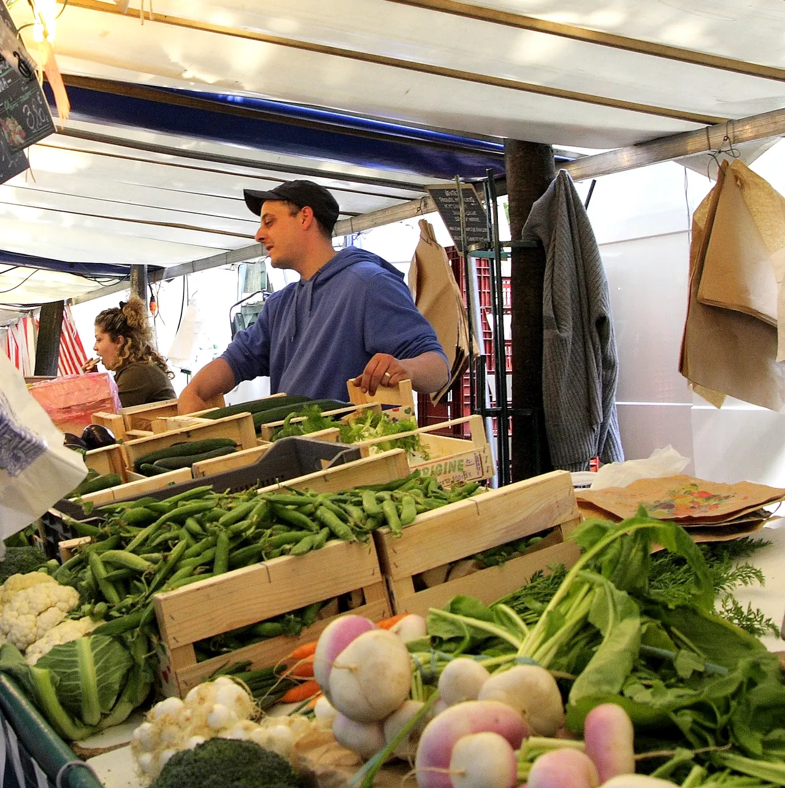

{kind=link}
빵집·시장 P0
Je voudrais 200 grammes de fromage.
치즈 200g 주세요.
주 부드레 되 상 그람 드 프로마주

파리 15구 콩방시옹 거리(Rue de la Convention)를 따라 알랑시아 거리(Rue Alain-Chartier)부터 아베 부셰르 거리(Rue de l'Abbé-Groult)까지 길게 펼쳐지는 마르셰 콩방시옹(Marché Convention)은 파리 현지 주민들이 가장 애용하는 대표적인 정통 노천 생활시장이다.
화요일, 목요일, 그리고 특히 활기가 넘치는 일요일 아침(07:00~14:30)에 수십 개의 천막 가판대가 늘어서며, 프랑스 각지에서 올라온 신선한 제철 과일(무화과, 납작복숭아, 청포도), 채소, 노르망디와 사부아의 아티장 치즈, 브르타뉴 직송 해산물, 바스크 샤퀴테리, 그리고 노릇하게 구워 기름이 쏙 빠진 로티세리 통닭(Poulet rôti)이 장바구니를 유혹한다.
관광객이 몰리는 마레나 라탱 지구의 시장과 달리 거품 없는 합리적인 가격대와 파리지앵들의 생생한 주말 일상을 고스란히 느낄 수 있어, 15일간의 아파트 체류 생활을 위한 최고의 식재료 보급 거점 역할을 한다.
15구 숙소에서 도보 8~10분 거리에 있어, 일요일 아침이나 목요일 오전에 에코백을 메고 산책 삼아 장을 보기에 최적이다. 갓 구운 로티세리 치킨과 감자 구이, 잘 익은 콩테 치즈와 멜론을 사 와서 숙소 테라스나 거실에서 즐기는 점심 식사는 파리 장기체류의 가장 큰 기쁨 중 하나다.
| 운영시간 | 화·목 07:00–13:30 · 일 07:00–14:30 |
|---|---|
| 휴무 | 월·수·금·토 휴무. 토요일 15구 대안은 Marché Lecourbe·Lefebvre·Cervantès(수·토) 다 — Marché Grenelle 은 수·일이라 토요 대안이 아니다 |
| 가격대 | €5.00-€20.00 |
| 예약 | 예약 불필요 — 공설 노천 생활시장 |
| 소요시간 | 30–45분 재확인 |
| 메모 | 출처 충돌 — 파리시 오픈데이터(marches-decouverts)는 화·목·일이고 paris.fr 시장 목록 페이지는 화·목·토로 적는다. 일정은 두 출처가 모두 동의하는 날만 쓴다 (화요일). 2026-08-22 확인 |
| 항목 | 상세 정보 |
|---|---|
| 위치 | Rue de la Convention (entre Rue Alain-Chartier et Rue de l'Abbé-Groult), 75015 Paris |
| 좌표 | 48.8375, 2.2965 |
| 개장 일시 | 화요일·목요일 07:00–13:30 / 일요일 07:00–14:30 |
| 정기 휴무 | 월요일·수요일·금요일·토요일 (인근 토요 대안: Marché Grenelle) |
| 입장료 | 무료 |
| 결제 방식 | 현금 및 신용카드 (소액 결제용 현금 일부 지참 권장) |
| 접근 교통 | 메트로 12호선 Convention역 도보 1분, 메트로 8호선 Boucicaut역 도보 5분 (숙소 도보 8분) |
| 공식 정보 | 파리시 공식 시장 안내 (verified_at: 2026-08-21) |
Je voudrais 200 grammes de fromage.
치즈 200g 주세요.
주 부드레 되 상 그람 드 프로마주
Je peux goûter ?
맛봐도 될까요?
주 푀 구테
C'est combien ?
얼마인가요?
세 콩비앙

1868년 앙리 라브루스트가 주철 기둥과 9개 도자기 돔으로 완성한 19세기 건축의 걸작 '라브루스트 열람실'과 일반에 전면 무료 개방된 거대한 타원형 '오발 열람실(Salle Ovale)', 프랑스 국립도서관 박물관.

18세기 원형 곡물거래소를 세계적인 건축가 안도 다다오가 노출 콘크리트 원통 실린더로 리노베이션한 현대미술관. 프랑수아 피노 회장의 세계적 현대미술 컬렉션과 1889년 돔 천장 무역 파노라마 프레스코화.

렌조 피아노와 리처드 로저스가 건물 배관과 골격을 외벽으로 노출시킨 20세기 하이테크 건축의 전설이자 유럽 최대 근현대미술관. ⚠ 2025년 가을부터 2030년까지 전면 개보수 공사로 본관 폐관 중.

클로드 모네가 43년간 직접 꽃과 연못을 가꾸며 불후의 『수련』 대작을 창조해낸 살아있는 인상파 캔버스. 초록색 일본식 다리가 걸린 '물의 정원(Jardin d'eau)'과 핑크빛 모네 생가 아틀리에.

1900년 파리 만국박람회를 위해 건립된 45m 높이 아르누보 철골 유리 네이브(Nave)의 기념비적 국립 전시장. 2024 파리 올림픽을 거쳐 리노베이션 완료 후 재개관한 파리 문화 예술의 중심지.

중세 소르본 대학 교수와 학생들이 공용어로 라틴어를 쓰던 데서 유래한 800년 파리 지성의 요람이자 센 강 좌안(Rive Gauche)의 심장. 프랑스 위인들의 성소 팡테옹(Panthéon), 셰익스피어 앤 컴퍼니, 뤽상부르 공원.